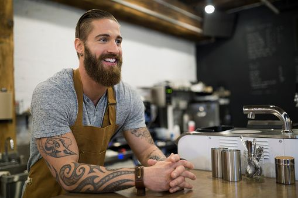

HOW TO CONTACT US
You can contact us either through our email - thanksalatte@business.com, either of our social media pages or drop into our coffee shop when we're open. Settle down for an eco-friendly and sustainable chat about anything and nothing. We look forward to seeing you! (To get directions simply click on the marker on the map below)
OPENING HOURS
MON - FRI
09:00 - 20:00
SAT
10:00-17:00
SUN
10:00-15:00



Founder of Thanks-A-Latte, Clark Kent